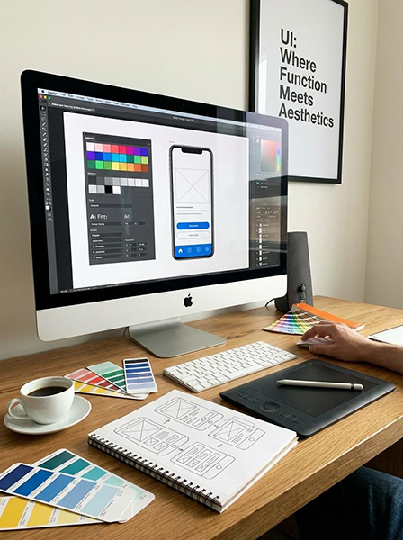
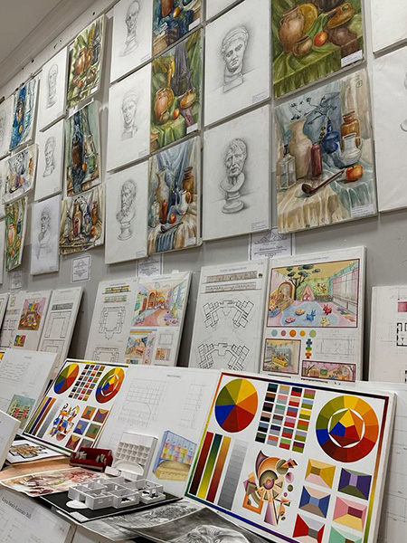
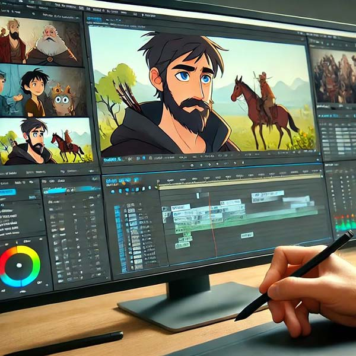

Arena Animation is a well-known institute that provides professional training in animation, graphic design, VFX, web design, and UI/UX. It helps students build creative and technical skills needed for the media and entertainment industry. The courses are designed to be practical, so students learn by working on real projects, which improves their confidence and portfolio. Arena Animation also focuses on software tools like Photoshop, Illustrator, After Effects, and Figma, which are important for designers. Many students choose Arena Animation because it offers career guidance, placement support, and industry-relevant knowledge, making it a good option for those who want to build a career in creative fields.
Know More About UsAt Arena Animation, we offer degree, diploma, and short-term courses in animation, VFX, graphic design, UI/UX, web design, and multimedia. Our courses focus on practical learning, creative skills, and industry-ready training to help students build successful careers
At Arena Animation, our faculty members are experienced professionals who are dedicated to helping students build creative and technical skills in animation, graphic design, web design, UI/UX, VFX, and multimedia. They guide students through practical learning, industry-based projects, and modern software tools to help them gain confidence and real-world knowledge. With supportive teaching methods and hands-on training, the faculty focuses on developing each student’s creativity, communication, and professional growth for a successful career in the creative industry.



100% placement assistance and career guidance.
Portfolio and resume building support.
Practical training with live projects.
Arena Animation has been providing animation and multimedia education for around 30 years.One of the leading institutes for animation, VFX, gaming, graphic design, UI/UX, and web development education. Over the years, it has trained more than 4.5 lakh students through practical and industry-oriented learning programs. Arena Animation has a wide network of centers across India and in multiple countries worldwide. Its branches are located in major cities like Delhi, Mumbai, Kolkata, Hyderabad, Jaipur, Chandigarh, Bangalore, Gurgaon, Ahmedabad, and many more. The institute operates through 200+ centers in India and has an international presence in over 20 countries.